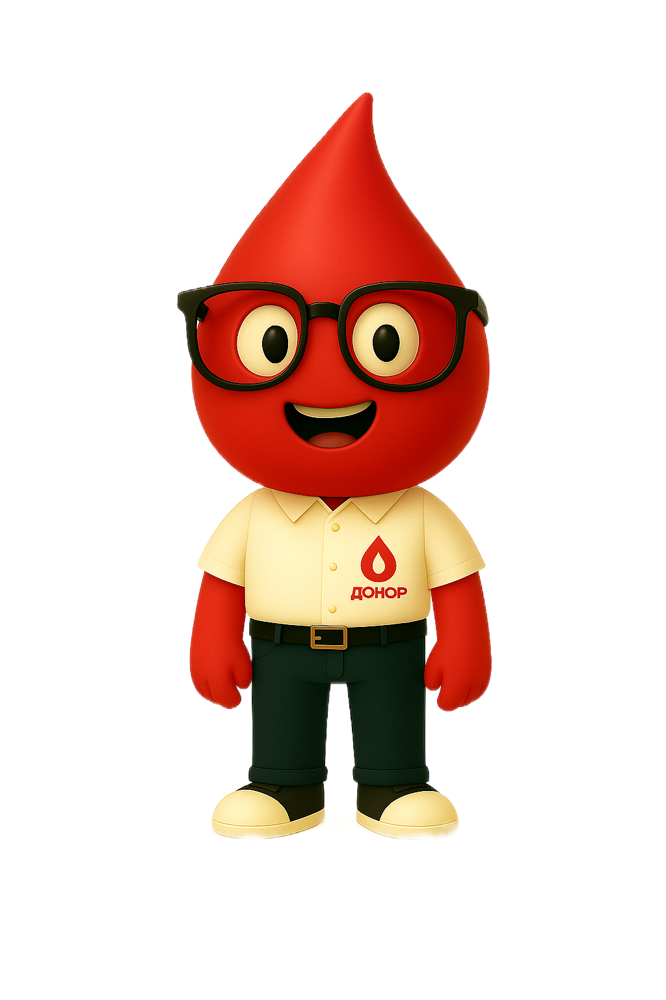

Донор56 – удобный способ помогать людям в Оренбургской области
Каждая донация крови – это шанс спасти чью-то жизнь. Приложение «Донор56» создано для доноров Оренбургской области, чтобы сделать процесс сдачи крови простым, понятным и удобным.
С нами вы сможете:
- Быстро записаться в ближайший пункт переливания крови
- Отслеживать свою донорскую историю и анализы
- Получать уведомления, когда ваша группа крови особенно нужна
- Участвовать в донорских акциях и получать благодарности
Почему это важно?
Ежедневно в больницах региона требуются десятки литров крови для операций, лечения тяжелых заболеваний и экстренных случаев. Став донором, вы делаете реальный вклад в спасение жизней.
«Донор56» – ваш помощник в донорстве крови. Записывайтесь на сдачу, отслеживайте анализы и получайте уведомления о важных заявках. Спасайте жизни легко!

«Каждая капля крови – это капля надежды для тех, кто в ней нуждается.»